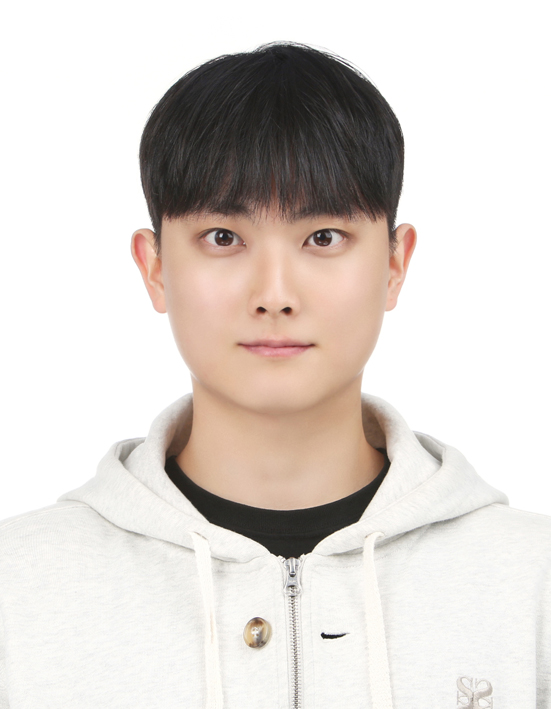

KAIST · Autonomous and Intelligent Systems Lab
Sohyun Kim
M.S. Student in Mobility
I am a master's student at the Cho Chun Shik Graduate School of Mobility, KAIST, and a member of the Autonomous and Intelligent Systems (AIS) Lab.
My research focuses on probabilistic state estimation and nonlinear filtering, with applications in target tracking, situational awareness, and railway vehicle condition monitoring.
I received my B.S. in Mechanical Engineering from Chung-Ang University in 2025.

sohyunkim@kaist.ac.kr
Publications
Google ScholarJournal
A Two-Dimensional Bayesian Continuous Attractor Neural Network for Robust Spatial State Estimation
Research Square · June 2026
Adaptive censoring-probability-based Tobit Kalman filter for tracking maneuvering targets
Aerospace Science and Technology · 163:110263 · 2025
LSTM-based Kalman Filter Error Compensation for Enhanced Moving Object Tracking
Journal of Institute of Control, Robotics and Systems · 31(1):68–76 · 2025
Conference
Estimation of Distribution Algorithms for Optimizing Threat Assessment Dynamic Bayesian Networks
2026 KSAS Spring Conference · Jeju, Republic of Korea · March 2026
Aerial Threat Assessment via Parameter-Updating Dynamic Bayesian Networks
2025 KSAS Fall Conference · Gangwon, Republic of Korea · November 2025
Background
Full CVEducation
2025 — Present
KAIST
M.S. Student, Cho Chun Shik Graduate School of Mobility
2019 — 2025
Chung-Ang University
B.S. in Mechanical Engineering
GPA 4.43 / 4.50
Research experience
2025 — Present
KAIST · AIS Lab
State estimation, threat assessment, and railway vehicle condition monitoring
2024 — 2025
Chung-Ang University · AISL
Guidance filtering and LSTM-enhanced target tracking
Awards & scholarships 4
- 2025 — 2027Master's Excellence Scholarship (Science and Engineering)
Ministry of Science and ICT, Korea
- 2023 — 2025National Science & Technology Scholarship
Full scholarship · Ministry of Science and ICT, Korea
- 2023Top Excellence Award, 2nd EV Energy Challenger
Korea Energy Agency · Team award
- 2019, 2022Academic Excellence Scholarships
Chung-Ang University · Top of class in September 2022